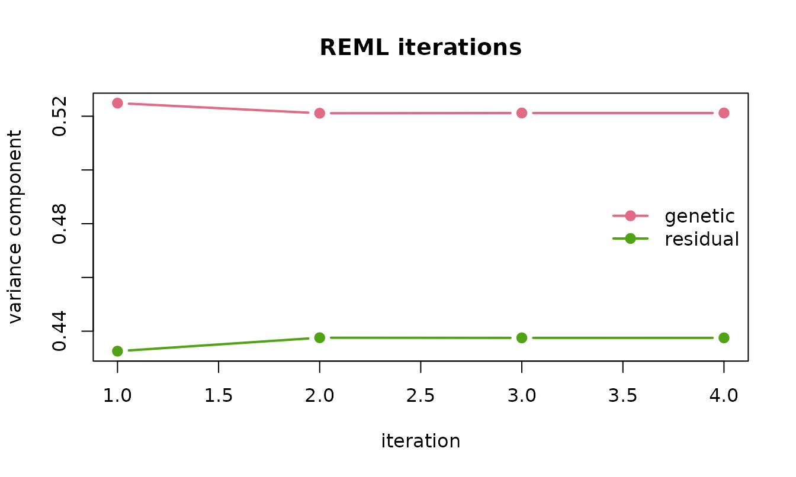
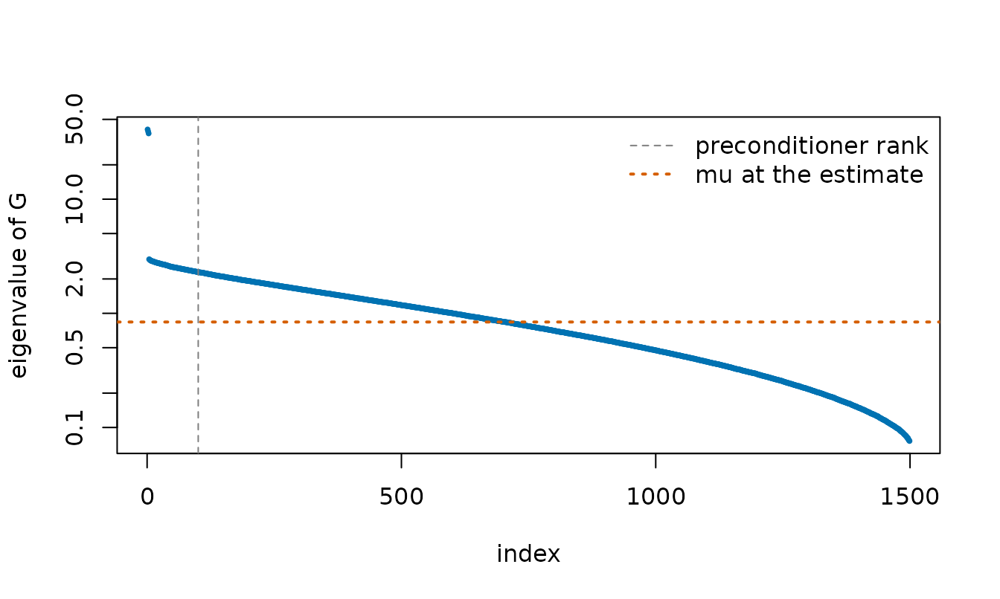
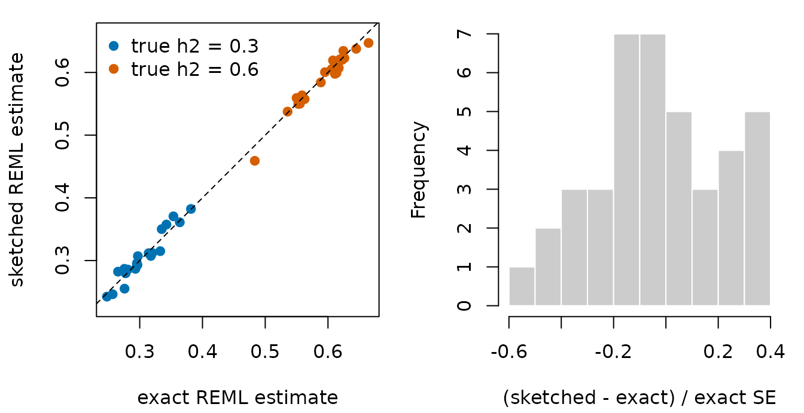
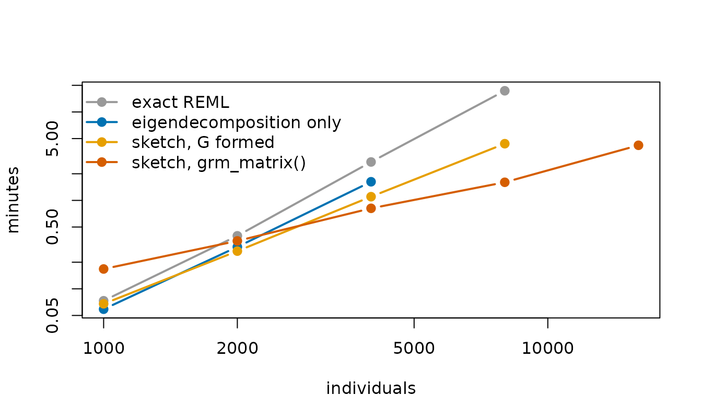

Genomic REML without forming the covariance matrix
Source:vignettes/genomic-reml.Rmd
genomic-reml.RmdHeritability estimation and genomic prediction rest on the linear mixed model where is the genomic relationship matrix among individuals. Its variance components are estimated by restricted maximum likelihood (REML), usually with the average-information algorithm of Gilmour, Thompson and Cullis (1995). Every iteration of the exact algorithm factorizes , which takes about operations, and holds several matrices in memory. For 50,000 individuals each of those matrices takes 20 GB.
reml_sketch() runs the same algorithm but replaces every
step that needs
in full with a randomized one. This vignette explains how, checks the
result against exact REML on data sets where both can be run, and
measures how the two scale.
What an iteration needs
Write
.
The REML score is
the average-information matrix is
and each iteration moves
to
.
Apart from the two traces, everything is a product of
with a vector, and a product with
needs only solves with
.
reml_sketch() obtains each piece as follows.
-
Solves with
.
The system
is
with
.
It is solved by conjugate gradients, preconditioned with a low-rank
approximation of
from
rpchol()that is built once, before the first iteration. Only changes between iterations, and the preconditioner depends on only through a diagonal, so one approximation serves the whole fit. - . XTrace estimates it from products with , each of which costs one solve. The random test vectors are drawn once and reused at every iteration, so the iterations settle on a fixed point rather than wander with fresh noise.
- . is a projection of rank , so exactly, and the second trace follows from the first at no cost.
With the default of 40 products for the trace, an iteration solves 44
systems, advanced together in five blocks by the block conjugate
gradient solver behind pcg(). Each step then multiplies
by a block of vectors. With
held as a matrix that costs
per vector; given as grm_matrix(M) for an
genotype matrix
it costs
,
and
is never formed.
A worked example
Simulated genotypes for 1,500 individuals from four subpopulations, on 3,000 markers, with a trait of heritability 0.5:
library(matsketch)
set.seed(11)
dat <- sim_genomic(n = 1500, p = 3000, h2 = 0.5, pops = 4)
G <- grm_matrix(dat$M)
fit <- reml_sketch(dat$y, G)
fit
#> <reml_sketch> converged in 4 iterations (rpchol rank-100 preconditioner, XTrace with 40 products)
#> estimate std.error
#> genetic 0.5212 0.0546
#> residual 0.4375 0.0404
#> h2 0.5436 0.0454
#> linear systems solved : 180 (mean 8.4 CG iterations)The history records each iteration’s estimates, the trace estimate, and the standard error of that trace estimate, which measures how far the randomized fit can sit from the exact one:
fit$history
#> iteration genetic residual trace_PG trace_se change
#> 1 1 0.5248868 0.4325594 1302.709 4.328189 1.187296e-01
#> 2 2 0.5211177 0.4375674 1333.567 4.193366 1.157773e-02
#> 3 3 0.5212062 0.4375185 1331.921 4.211137 1.698354e-04
#> 4 4 0.5212044 0.4375233 1331.864 4.210621 1.093405e-05
plot(fit)
The exact fit, for comparison:
exact <- reml_exact(dat$y, as.matrix(G))
rbind(sketched = c(fit$sigma2, h2 = fit$h2, se_h2 = fit$se[["h2"]]),
exact = c(exact$sigma2, h2 = exact$h2, se_h2 = exact$se[["h2"]]))
#> genetic residual h2 se_h2
#> sketched 0.5212044 0.4375233 0.5436418 0.04541329
#> exact 0.5279405 0.4326637 0.5495922 0.04517044The two estimates of differ by 0.13 exact standard errors: the error the sketch adds is small next to the sampling error of REML itself.
Each solve took 8.4 conjugate gradient iterations on average. The spectrum of shows why so few are needed:
ev <- eigen(as.matrix(G), symmetric = TRUE, only.values = TRUE)$values
mu <- fit$sigma2[["residual"]] / fit$sigma2[["genetic"]]
keep <- ev > 1e-8
plot(which(keep), ev[keep], log = "y", pch = 19, cex = 0.4, col = "#0072B2",
xlab = "index", ylab = "eigenvalue of G")
abline(v = 100.5, lty = 2, col = "grey50")
abline(h = mu, lty = 3, lwd = 2, col = "#D55E00")
legend("topright", c("preconditioner rank", "mu at the estimate"),
lty = c(2, 3), lwd = c(1, 2), col = c("grey50", "#D55E00"),
bty = "n")
Population structure puts 3 eigenvalues far above the rest, and those are what the rank-100 preconditioner removes. An ideal rank-100 preconditioner maps the top 100 eigenvalues of to and leaves the others alone, so the preconditioned system has condition number at most about , here with . At that condition number conjugate gradients need only a few iterations.
Accuracy over many data sets
The package ships the results of fitting 40 simulated data sets both
ways, each with 2,000 individuals from four subpopulations, 4,000
markers and a true heritability of 0.3 or 0.6, all with the default
settings of reml_sketch(). The script that produced them is
data-raw/reml-benchmark.R in the package’s GitHub
repository.
acc <- read.csv(system.file("extdata", "reml-accuracy.csv",
package = "matsketch"))
z <- (acc$sketch_h2 - acc$exact_h2) / acc$exact_se
summary(z)
#> Min. 1st Qu. Median Mean 3rd Qu. Max.
#> -0.58182 -0.18397 -0.06672 -0.04044 0.12833 0.38212
op <- par(mfrow = c(1, 2), mar = c(4.2, 4.2, 1, 1))
cols <- ifelse(acc$true_h2 < 0.5, "#0072B2", "#D55E00")
plot(acc$exact_h2, acc$sketch_h2, pch = 19, col = cols, asp = 1,
xlab = "exact REML estimate", ylab = "sketched REML estimate")
abline(0, 1, lty = 2)
legend("topleft", c("true h2 = 0.3", "true h2 = 0.6"), pch = 19,
col = c("#0072B2", "#D55E00"), bty = "n")
hist(z, breaks = 12, col = "grey80", border = "white", main = "",
xlab = "(sketched - exact) / exact SE")
par(op)Across the 40 data sets the sketched estimate was never more than 0.58 exact standard errors from the exact one, and the median difference was 0.16 standard errors. Measured against the true heritability, the root-mean-square error was 0.04 for exact REML and 0.042 for the sketch.
Scaling
The same script timed each fit as the number of individuals grew from
1,000 to 16,000, with 5,000 markers throughout. form_G is
the time to build
from the genotypes, which the exact fit and the dense sketched fit both
need first. eigen is one eigendecomposition of
,
the first step of exact methods that diagonalize
once, such as FaST-LMM (Lippert et al., 2011); it was run up to 4,000
individuals.
sc <- read.csv(system.file("extdata", "reml-scaling.csv",
package = "matsketch"))
secs <- with(sc, tapply(seconds, list(n, method), sum))
secs <- secs[, c("form_G", "exact", "eigen", "sketch_dense", "sketch_lazy")]
round(secs, 1)
#> form_G exact eigen sketch_dense sketch_lazy
#> 1000 2.8 1.6 0.7 1.2 10.1
#> 2000 11.8 12.0 6.0 4.2 20.9
#> 4000 48.3 114.9 49.2 17.8 48.8
#> 8000 193.0 848.1 NA 69.5 96.1
#> 16000 NA NA NA NA 251.9The plot adds the time to form to every method that needs it:
tot <- cbind(
`exact REML` = secs[, "form_G"] + secs[, "exact"],
`eigendecomposition only` = secs[, "form_G"] + secs[, "eigen"],
`sketch, G formed` = secs[, "form_G"] + secs[, "sketch_dense"],
`sketch, grm_matrix()` = secs[, "sketch_lazy"]
)
n <- as.numeric(rownames(secs))
cols <- c("#999999", "#0072B2", "#E69F00", "#D55E00")
matplot(n, tot / 60, log = "xy", type = "b", pch = 19, lty = 1, lwd = 2,
col = cols, xlab = "individuals", ylab = "minutes")
legend("topleft", colnames(tot), col = cols, lwd = 2, pch = 19, bty = "n")
Exact REML took 7.4 times as long for 8,000 individuals as for 4,000,
close to the eightfold its cubic cost predicts; including the time to
form
it took 17 minutes. The sketched fit on grm_matrix() took
1.6 minutes at that size, and 4.2 minutes for 16,000 individuals, where
the exact fit was not attempted.
When
is already in memory, the dense sketched fit is the fastest option from
2,000 individuals up; forming
is the expensive part, and for 8,000 individuals it took longer than the
dense sketched fit itself. A product with grm_matrix()
costs about
operations against
for a formed
,
so with 5,000 markers it is the slower of the two per product until
reaches 10,000. It pays for itself by skipping the formation of
and its
memory.
Memory is the other constraint. The exact fit holds about four
matrices, the dense sketched fit one, and the fit on
grm_matrix() only the
genotypes. In gigabytes:
mem <- with(sc[sc$method %in% c("exact", "sketch_dense", "sketch_lazy"), ],
tapply(memory_gb, list(n, method), sum))
round(mem, 2)
#> exact sketch_dense sketch_lazy
#> 1000 0.03 0.01 0.04
#> 2000 0.12 0.03 0.07
#> 4000 0.48 0.12 0.15
#> 8000 1.91 0.48 0.30
#> 16000 NA NA 0.60At 16,000 individuals, four matrices would take 7.6 GB.
Choosing the settings
-
rankaffects only speed. The preconditioner changes how many conjugate gradient iterations a solve takes, not what it converges to. The printed fit reports the mean iterations per solve; if that number is large, a larger rank will help. -
msets the size of the randomized error, shown astrace_sein the history. It shrinks roughly like , and each extra product costs one more solve per iteration. -
estimator = "hutchinson"is available for comparison. The two estimators behave similarly when has no dominant eigenvalues, and XTrace is far more accurate when it does. -
cg_tolcontrols the accuracy of each solve. The default of keeps its effect well below that of the randomized trace.
Limitations
reml_sketch() fits one relationship matrix plus a
residual, for a Gaussian trait with no missing values. For a few
thousand individuals the exact fit is fast and should be preferred. For
a single relationship matrix, exact REML can also be computed after one
eigendecomposition of
,
which costs
time once and
memory; the sketched fit needs neither. Stochastic traces and conjugate
gradients are the backbone of large-scale REML in animal breeding
(Matilainen et al., 2013) and human genetics (Loh et al., 2015);
reml_sketch() pairs them with the XTrace estimator and a
randomly pivoted Cholesky preconditioner.
The timings above come from R 4.6.1 with its reference BLAS on one core of a Windows laptop. An optimized BLAS speeds up both kinds of fit.
References
Epperly, E. N., Tropp, J. A. and Webber, R. J. (2024). XTrace: making the most of every sample in stochastic trace estimation. SIAM Journal on Matrix Analysis and Applications 45, 1–23. doi:10.1137/23m1548323
Frangella, Z., Tropp, J. A. and Udell, M. (2023). Randomized Nyström preconditioning. SIAM Journal on Matrix Analysis and Applications 44, 718–752. doi:10.1137/21m1466244
Gilmour, A. R., Thompson, R. and Cullis, B. R. (1995). Average information REML: an efficient algorithm for variance parameter estimation in linear mixed models. Biometrics 51, 1440–1450. doi:10.2307/2533274
Lippert, C., Listgarten, J., Liu, Y., Kadie, C. M., Davidson, R. I. and Heckerman, D. (2011). FaST linear mixed models for genome-wide association studies. Nature Methods 8, 833–835. doi:10.1038/nmeth.1681
Loh, P.-R., Bhatia, G., Gusev, A., Finucane, H. K., Bulik-Sullivan, B. K. et al. (2015). Contrasting genetic architectures of schizophrenia and other complex diseases using fast variance-components analysis. Nature Genetics 47, 1385–1392. doi:10.1038/ng.3431
Matilainen, K., Mäntysaari, E. A., Lidauer, M. H., Strandén, I. and Thompson, R. (2013). Employing a Monte Carlo algorithm in Newton-type methods for restricted maximum likelihood estimation of genetic parameters. PLoS ONE 8, e80821. doi:10.1371/journal.pone.0080821
VanRaden, P. M. (2008). Efficient methods to compute genomic predictions. Journal of Dairy Science 91, 4414–4423. doi:10.3168/jds.2007-0980